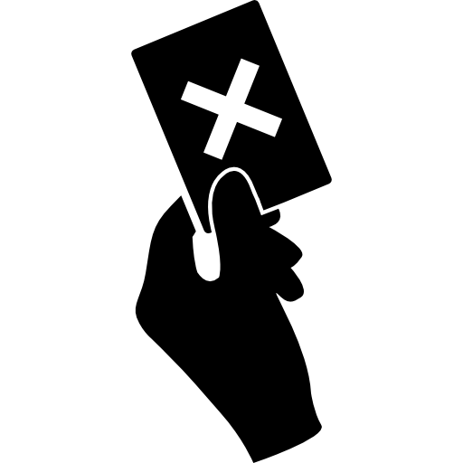

Professor
Início
Desempenho da Turma
Faltas
Calendário
Notas
Analisar por:
Alunos (dentro da Turma)
Turmas (Comparativo de Médias)
Turma:
Selecione uma turma
Disciplina:
Selecione uma disciplina
Avaliação:
Selecione uma avaliação
I1
I2
EPA
N2
N3
Recuperação
Tipo de Gráfico:
Gráfico de Desempenho